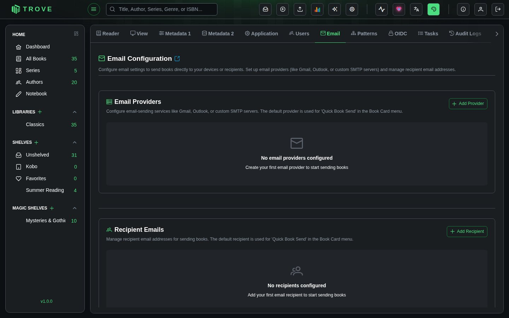
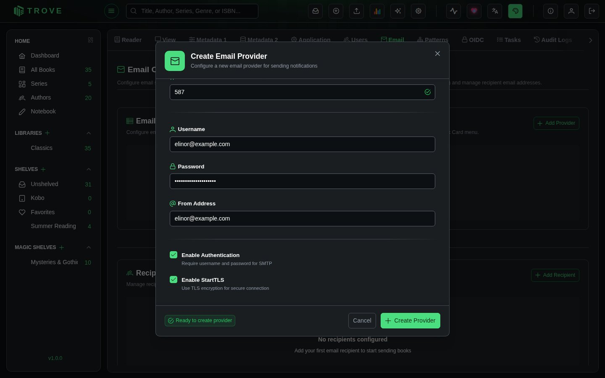
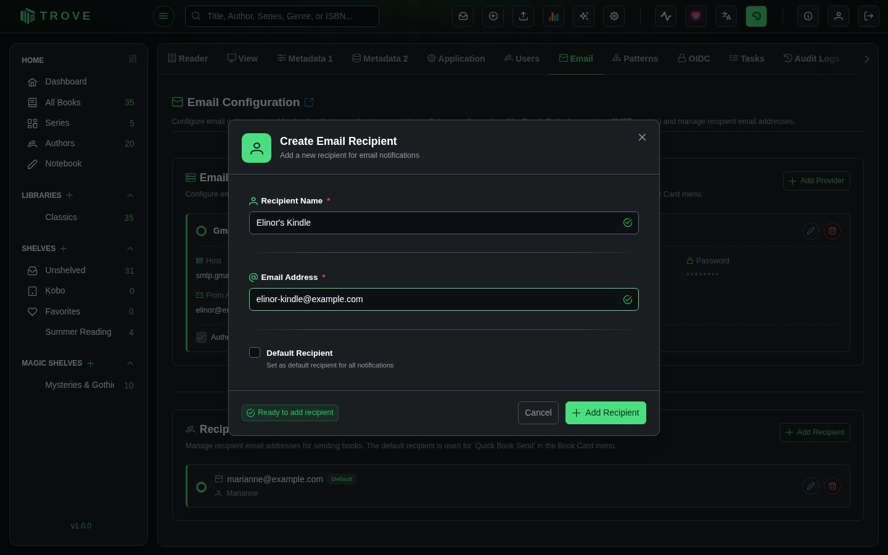
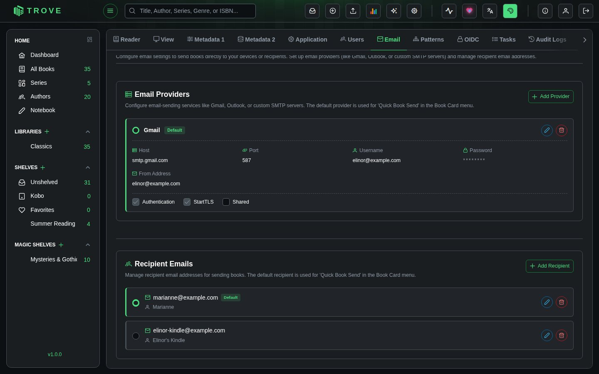
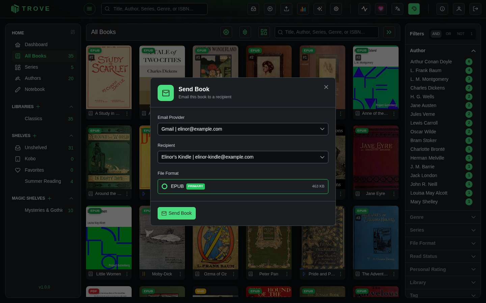

Sending by email
Trove can email books to a Kindle, an e-reader or a friend. You set up an email account to send from (a provider) and the addresses to send to (recipients); after that it's one click from any book. This guide uses Gmail, but any SMTP service works.
Prerequisites
Before setting up Gmail as your email provider, ensure you have:
- A Gmail account with email sending privileges
- 2-Factor Authentication enabled on your Google account (required for app passwords)
- App Password generated for Trove (we'll guide you through this process)
- Email permission in your Trove account (contact your administrator if needed)
Step 1: Generate Gmail App Password
Since Gmail requires secure authentication, you'll need to create an app-specific password for Trove.
- Go to your Google Account Security Settings
- Ensure 2-Step Verification is enabled (required for app passwords)
- Click on App passwords under "Signing in to Google"
- Select Mail as the app type
- Choose Other (Custom name) for the device
- Enter "Trove" as the custom name
- Click Generate
- Copy the 16-character password - you'll need this for the Trove setup
Step 2: Configure Email Provider in Trove
Now let's add Gmail as an email provider in your Trove settings.

- Navigate to Settings > Email in Trove
- Click Add Provider

Fill in the Gmail configuration details:
| Field | Value |
|---|---|
| Name | Gmail (or any descriptive name) |
| Host | smtp.gmail.com |
| Port | 587 |
| Username | Your full Gmail address (for example elinor@gmail.com) |
| Password | The 16-character app password you generated |
| From Address | Your Gmail address (same as username) |
| Auth | ✅ Enabled |
| StartTLS | ✅ Enabled |
| Shared | ⬜ (Admin only - check to share with all users) |
- Click Create Provider
Step 3: Set Up Recipient Emails
After configuring your email provider, you'll need to add recipients who will receive your books via email.
- Navigate to Email > Recipients in Trove
- Click Add Recipient

Fill in the recipient details:
| Field | Value |
|---|---|
| Email Address | The recipient's email address (for example elinor_kindle@kindle.com) |
| Name | A friendly name for the recipient (e.g., John's Kindle) |
| Default Recipient | Check this box to set as your default recipient |
- Click Save to add the recipient
This is how the interface should look after setting up both the email provider and recipient:

Step 4: Sending Books via Email
Trove offers two convenient methods to send books via email:

Quick Book Send (One-Click)
For fast, streamlined sending using your default settings:
- Navigate to any book in your library
- Click the three-dot menu on the book card
- Select Book Send > Quick Send
- The book is instantly sent using your default email provider to your default recipient
Files over 25 MB ask you to confirm first, since many mail services refuse large attachments.
Custom/Advanced Send
For flexible sending with specific provider and recipient selection:
- Navigate to any book in your library
- Click the three-dot menu on the book card
- Select Book Send > Custom Send
- Choose your desired email provider from the dropdown
- Select the recipient from the dropdown
- Click Send
Multi-User Email Configuration
How it works
In short:
- Personal Email Providers: Each user can configure their own private email providers (Gmail, Outlook, custom SMTP, etc.)
- Shared Email Providers (Admin Only): Administrators can create shared providers that are available to all users
- Personal Recipients: Each user maintains their own list of email recipients
- Independent Defaults: Each user sets their own default email provider and default recipient
- Provider Protection: Users cannot modify or delete shared providers created by other admins
- No Interference: Users cannot see or modify other users' private email configurations
- Shared Library: All users can send any book from the shared library using their own email settings
Shared Providers
What are Shared Providers?
- Administrators can mark email providers as "shared" to make them available to all users
- Shared providers are marked with a share icon in the provider list
- All users can use shared providers to send books
- Only the admin who created a shared provider can modify or delete it
Benefits of Shared Providers:
- Centralized Management: Admins can set up instance-wide email providers
- Simplified Setup: Users don't need to configure their own SMTP settings
- Cost Efficiency: Share paid email services across your instance
- Consistency: Ensure all users have access to reliable email providers
Use Cases for Shared Providers:
- Shared email service account for the entire instance
- Educational institutions providing centralized email access
- Families sharing a single email account for sending books
- Small teams wanting simplified configuration
Use Cases
Scenario 1: Instance with Shared Provider
- Admin sets up a shared Gmail account for all users
- Users can use the shared provider to send books
- Users can also add their own personal providers if desired
- Each user maintains their own recipient list
Scenario 2: Family Library with Mixed Setup
- Parent (admin) shares their Gmail provider with the family
- Children use the shared provider to send to their devices
- Other parent adds their own Outlook provider for personal use
- Each person has their own recipient lists
Scenario 3: Friend Group Library
- Admin creates shared email provider for the group
- Friends can use the shared provider immediately
- Friends can add personal providers if they prefer
- Everyone manages their own recipient lists privately
Scenario 4: Privacy-Focused Users
- Users create only private email providers
- No sharing enabled - full privacy
- Each person's email configuration is completely isolated
- Suitable for privacy-conscious individuals sharing a library
Troubleshooting
Common Issues and Solutions
❌ Authentication Failed
- Double-check your Gmail address and app password
- Ensure 2-Factor Authentication is enabled on your Google account
- Verify you're using the app password, not your regular Gmail password
❌ Connection Timeout
- Confirm the host is
smtp.gmail.comand port is587 - Check that StartTLS is enabled
- Verify your network allows SMTP connections
❌ "Less Secure App" Error
- This usually indicates you're using your regular password instead of an app password
- Generate a new app password and use that instead
❌ Books Not Arriving
- Check the recipient's spam/junk folder
- Verify the recipient email address is correct
- Ensure your Gmail account has sufficient sending limits
❌ Recipient Not Receiving Books
- Verify the recipient's email address is correct
- Check if the recipient needs to whitelist your Gmail address
- For Kindle users, ensure your Gmail address is added to their approved email list in their Amazon account settings
Permission and Visibility Issues
❌ Cannot See Email Settings
- Verify you have email permission in your Trove account
- Contact your administrator to request email access
- Check that you're logged into the correct account
❌ Cannot See Other Users' Providers
- This is expected behavior - private email configurations are personal to each user
- Only shared providers (marked with "S" badge) are visible to all users
- Each user must set up their own private email providers and recipients
- If you need to send using different credentials, create a new provider in your account
❌ Cannot Edit or Delete a Shared Provider
- Shared providers can only be modified by the admin who created them
- If you need changes to a shared provider, contact your administrator
- You can always create your own private provider as an alternative
❌ Cannot Share Providers (No Checkbox)
- Only administrators can share email providers
- Contact your administrator if you need a provider shared with all users
- Regular users can only create private providers
Security Best Practices
- Use App Passwords Only: Never use your main Gmail password for third-party applications
- Limit Access: Only enable the minimum permissions required
- Monitor Usage: Regularly check your Gmail sent folder for unexpected activity
- Revoke When Needed: If you stop using Trove, revoke the app password from your Google Account
Alternative Email Providers
While this guide focuses on Gmail, Trove supports other email providers:
- Outlook/Hotmail: Use
smtp-mail.outlook.comon port587 - Yahoo: Use
smtp.mail.yahoo.comon port587 - Custom SMTP: Any SMTP server with the appropriate settings
The configuration process is similar - simply adjust the host, port, and authentication settings according to your provider's documentation.